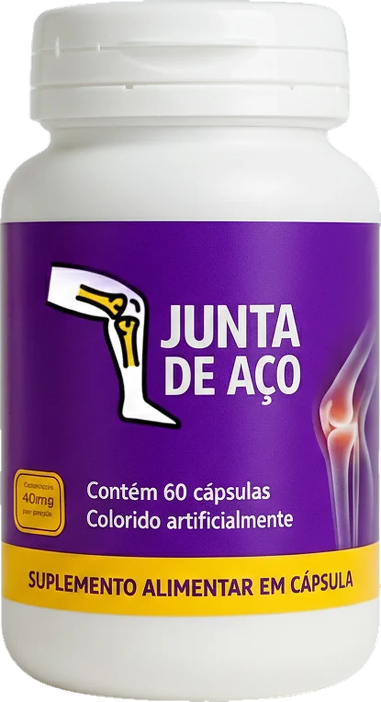
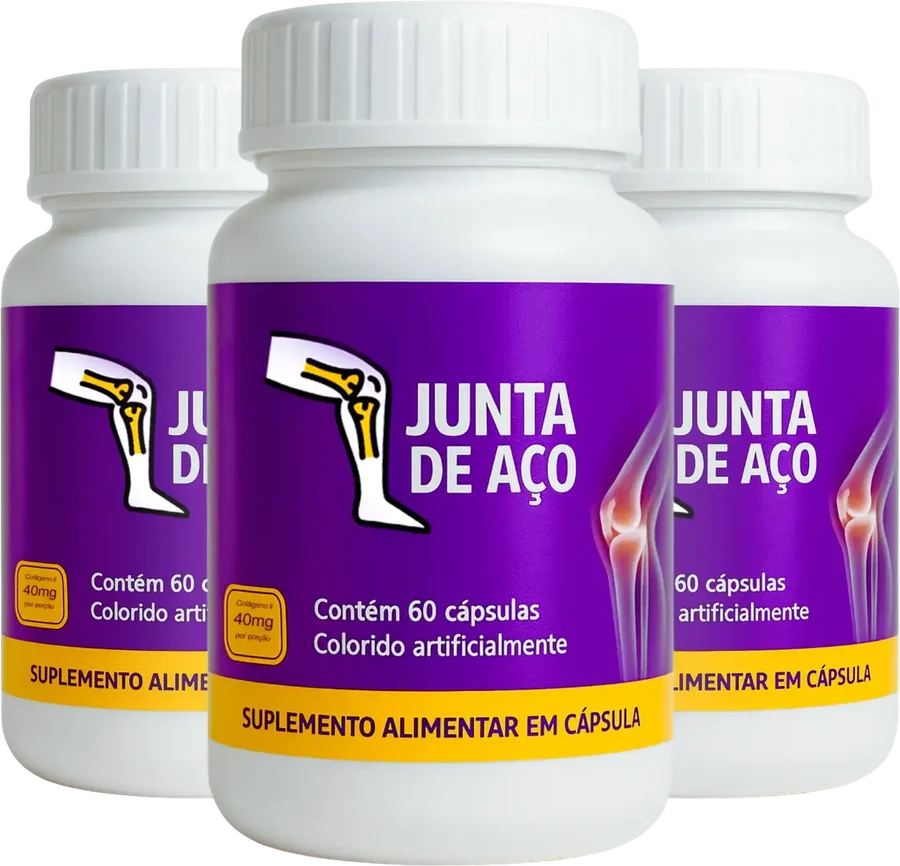

Cada degrau pesa
Subir escadas, agachar ou levantar da cadeira vira motivo de preocupação.
Restaure sua liberdade de movimento
Com apenas 2 cápsulas por dia, a fórmula do Junta de Aço une Colágeno tipo 2, cúrcuma, magnésio e vitaminas D e C para cuidar das suas articulações e devolver a alegria de se movimentar.

01O ponto de partida
Subir escadas, agachar ou levantar da cadeira vira motivo de preocupação.
As primeiras horas do dia começam travadas, até o corpo “esquentar”.
A caminhada, o jogo, o passeio com os netos: aos poucos, a dor vai tirando tudo isso.
A boa notícia: dá para cuidar das suas articulações todos os dias. O Junta de Aço foi desenvolvido para quem busca uma solução natural para as dores que limitam o dia a dia.
02Benefícios
Seis motivos para o Junta de Aço entrar na sua rotina, duas cápsulas por vez.
Ajuda a aliviar o desconforto e a inflamação nas articulações, para um bem-estar que dura o dia inteiro.
Com Colágeno tipo 2, contribui para proteger as cartilagens contra o desgaste do dia a dia.
Favorece a lubrificação natural das articulações, para se mover com menos atrito.
Recupere a amplitude dos seus movimentos e faça as tarefas do dia com mais facilidade.
Contribui para a recuperação das articulações, junto com acompanhamento profissional.
Caminhar, dançar, brincar e viver sem deixar a dor decidir o que você pode fazer.
03Composição
Cinco ativos escolhidos a dedo, cada um com um papel no cuidado das suas articulações.
Estrela · cartilagem
A principal proteína da cartilagem, o “amortecedor” natural das articulações. Ajuda a protegê-la do desgaste a cada passo.
Natural · inflamação
Raiz conhecida pela ação anti-inflamatória natural, que ajuda a aliviar o desconforto e o inchaço nas juntas.
Mineral · músculos e ossos
Fundamental para a saúde dos músculos e dos ossos. Contribui para o relaxamento muscular e para a função nervosa.
Vitaminas · ossos e colágeno
A vitamina D ajuda o corpo a absorver o cálcio; a vitamina C participa da formação do colágeno. Uma dupla que fortalece ossos e articulações.
04Como funciona
Fase 1 · Dias 1 a 15
Você começa a sentir um leve alívio das dores e uma agradável sensação de bem-estar nas articulações.
Fase 2 · Dias 16 a 30
A rigidez ao acordar diminui e sobra mais energia para as atividades do dia a dia.
Fase 3 · Dias 31 a 45
A dor perde espaço e você ganha mobilidade e flexibilidade para se movimentar.
Fase 4 · Uso contínuo
Com o uso contínuo, a fórmula ajuda a proteger as articulações e a prevenir novos desconfortos, para resultados que duram.
Os resultados variam de pessoa para pessoa. Por isso recomendamos o tratamento de pelo menos 3 meses.
05Como usar
Um hábito que cabe em qualquer rotina e leva menos de um minuto.
Tome 2 cápsulas por dia, ou conforme orientação de um profissional de saúde.
De preferência antes das principais refeições, com um copo de água.
O segredo é a constância: o uso contínuo é o que traz os melhores resultados.
Dica: deixe o pote à vista, perto do café da manhã, para não esquecer.
06Depoimentos
Clientes reais contam a própria história de superação, com as próprias palavras.
Relatos individuais de clientes. Os resultados podem variar de pessoa para pessoa.
07Dúvidas
Não encontrou o que procurava? Fale com a nossa equipe.
Recomendamos 2 cápsulas por dia, de preferência antes das principais refeições, ou conforme orientação de um profissional de saúde.
Os resultados variam de pessoa para pessoa. A maioria dos clientes relata os primeiros sinais de alívio nas primeiras semanas, com resultados mais significativos após 30 dias de uso contínuo.
Cada pote tem 60 cápsulas. Com 2 cápsulas por dia, ele dura 30 dias. Ou seja, um pote para cada mês de tratamento.
O Junta de Aço é um suplemento alimentar. Gestantes, lactantes, crianças e pessoas com doenças crônicas devem consultar um médico antes de iniciar o uso.
O Junta de Aço é produzido em conformidade com as normas da Anvisa, garantindo qualidade e segurança para você.
Não. É um suplemento alimentar em cápsulas. Não substitui tratamentos médicos e não se destina a diagnosticar, tratar ou curar doenças.
O Junta de Aço é um produto Multvit, empresa especializada em suplementos alimentares.
Sim. Enviamos para todo o país. Fale com a nossa equipe pelo WhatsApp para saber valores, frete e prazo de entrega para a sua região.
Comece hoje mesmo
Quanto antes você começa, mais cedo as suas articulações sentem a diferença. Fale com a nossa equipe e faça de hoje o primeiro dia de uma vida com mais liberdade.
